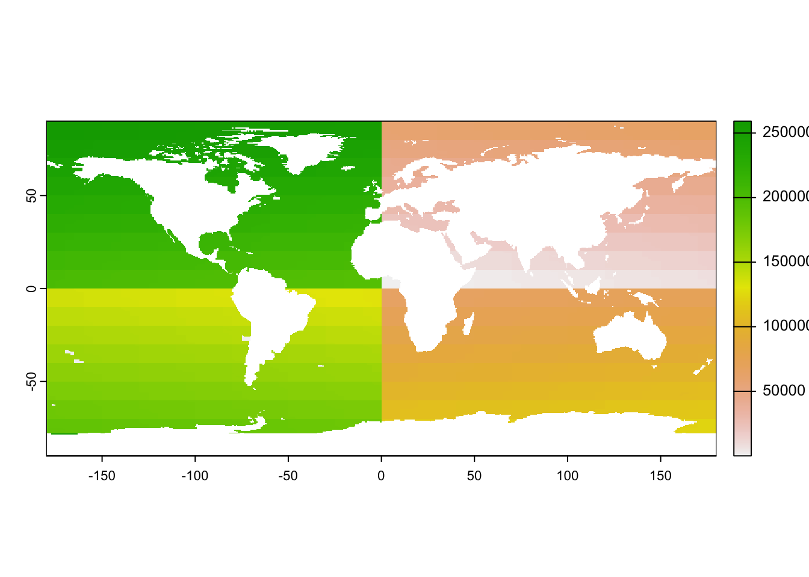
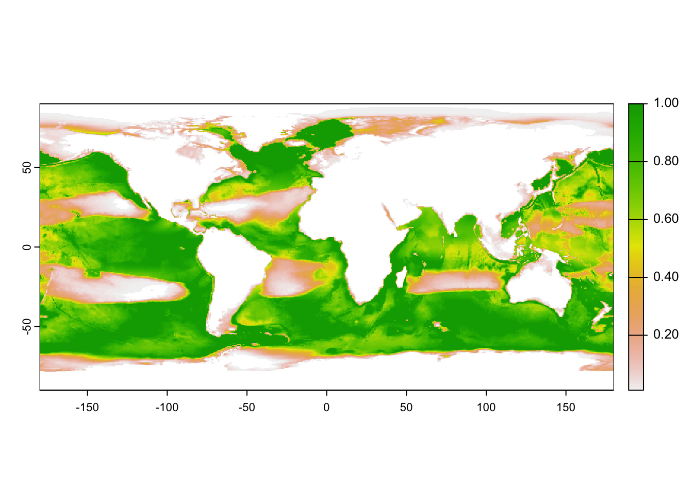

Warning: package 'duckdb' was built under R version 4.3.1
Warning: package 'mapview' was built under R version 4.3.1
Code
# The legacy packages maptools, rgdal, and rgeos, underpinning the sp package,# which was just loaded, will retire in October 2023.# downloads about 2 GB of data, approx 10 GB when unpacked# download_db()# data(package = "raquamaps")con_sl <-default_db("sqlite") # /Users/bbest/Library/Application Support/aquamaps/am.dbfile_size(aquamapsdata::am_db_sqlite()) # 11.2G
Queries in SQLite are quite slow compared to the new DuckDB.
Code
# table rename from old sqlite (sl) to new duckdb (dd)d_tbls <-tribble(~tbl_sl, ~tbl_dd,"hcaf_r", "cells","hcaf_species_native", "spp_cells","hspen_r", "spp_prefs","occurrencecells_r", "spp_occs","speciesoccursum_r", "spp")d_tbls
1 of 5 tbls: read sqlite.hcaf_r () ~ 2023-12-01 21:48:46.1486
177,869 rows read in 0.0264 mins
write duckdb.cells ~ 2023-12-01 21:48:47.731827
177,869 rows written in 0.0099 mins
2 of 5 tbls: read sqlite.hcaf_species_native () ~ 2023-12-01 21:48:48.326646
118,249,855 rows read in 2.7802 mins
write duckdb.spp_cells ~ 2023-12-01 21:51:35.139909
118,249,855 rows written in 1.2148 mins
3 of 5 tbls: read sqlite.hspen_r () ~ 2023-12-01 21:52:48.026475
23,699 rows read in 0.0039 mins
write duckdb.spp_prefs ~ 2023-12-01 21:52:48.259237
23,699 rows written in 0.0011 mins
4 of 5 tbls: read sqlite.occurrencecells_r () ~ 2023-12-01 21:52:48.323373
2,908,181 rows read in 0.1266 mins
write duckdb.spp_occs ~ 2023-12-01 21:52:55.917685
2,908,181 rows written in 0.0438 mins
5 of 5 tbls: read sqlite.speciesoccursum_r () ~ 2023-12-01 21:52:58.547241
23,699 rows read in 0.0022 mins
write duckdb.spp ~ 2023-12-01 21:52:58.679833
23,699 rows written in 0.0015 mins
Rows: 163 Columns: 4
── Column specification ────────────────────────────────────────────────────────
Delimiter: ","
chr (4): tbl_old, tbl_new, fld_old, fld_new
ℹ Use `spec()` to retrieve the full column specification for this data.
ℹ Specify the column types or set `show_col_types = FALSE` to quiet this message.
version compatibility (since duckdb is not backwards compatible with itself before version 1.0); and
reducing file size
Code
dir_parquet <-glue("{dir_data}/derived/aquamaps/parquet")dbExecute(con_dd, glue(" -- export the database to the target directory 'db_name' as CSV files -- EXPORT DATABASE 'db_name'; -- export to directory 'db_name', using the given options for the CSV serialization -- EXPORT DATABASE 'db_name' (FORMAT CSV, DELIMITER '|'); -- export to directory 'db_name', tables serialized as Parquet EXPORT DATABASE '{dir_parquet}' (FORMAT PARQUET);"))
cells_tif <-glue("{dir_data}/derived/aquamaps/cell_id.tif")if (!file.exists(cells_tif)){# get cells as points pts_cells <-tbl(con_dd, "cells") |>select(cell_id, csquare_code, center_long, center_lat) |>collect() |>st_as_sf(coords =c("center_long", "center_lat"), crs =4326)# create template raster from global dimensions and resolution r_g <-rast(xmin =-180, xmax =180, ymin =-90, ymax =90, resolution =0.5)# rasterize based on cell_id r_cells <-rasterize(pts_cells, r_g, field ="cell_id", fun ="last")names(r_cells) <-"cell_id"# ensure no duplicate cell_idsstopifnot(sum(duplicated(values(r_cells, na.rm=T))) ==0)# write to smallest possible raster r_cells |>writeRaster( cells_tif, overwrite = T,datatype ="INT4U",gdal =c("TILED=YES","COMPRESS=DEFLATE"))file_size(cells_tif) # 279K d_cells <-tbl(con_dd, "cells") |>collect() |>left_join(tibble(cell_id =values(r_cells, mat=F),cell_idx =1:ncell(r_cells)), by ="cell_id") |>relocate(cell_idx, .after = cell_id)dbWriteTable(con_dd, "cells", d_cells, overwrite = T)}r_cells <-rast(cells_tif)plot(r_cells)

8 plot species
Code
sp_name <-"blue whale"# get sp_keysp_key <-tbl(con_dd, "spp") |>filter(common_name ==!!sp_name) |>pull(sp_key)# get sp cellsd <-tbl(con_dd, "spp_cells") |>filter(sp_key ==!!sp_key) |>left_join(tbl(con_dd, "cells") |>select(cell_id, cell_idx), by ="cell_id") |>select(cell_idx, probability) |>collect()# TODO: filter also by# - fao_area_yn: Does this cell fall within an FAO area where the species is known to occur (endemic/native)? 0=No, 1=Yes# - bound_box_yn: Does this cell fall within the geographical bounding box known for the species? 0=No, 1=Yesr <- r_cellsvalues(r) <-NAr[d$cell_idx] <- d$probabilityplot(r)

9 next steps
assign species to aphia_id (WoRMS: MarineSpecies.org)
create function to extract species list per arbitrary region, a la CalCOFI oceano app
develop multidimensional array extraction with xarray
…
10 References
Kaschner, K., K. Kesner-Reyes, C. Garilao, J. Segschneider, J. Rius-Barile, T. Rees, and R. Froese. 2023. “AquaMaps: Predicted Range Maps for Aquatic Species. Retrieved from https://www.aquamaps.org.”
Visalli, Morgan E., Benjamin D. Best, Reniel B. Cabral, William W. L. Cheung, Nichola A. Clark, Cristina Garilao, Kristin Kaschner, et al. 2020. “Data-Driven Approach for Highlighting Priority Areas for Protection in Marine Areas Beyond National Jurisdiction.”Marine Policy, March, 103927. https://doi.org/10.1016/j.marpol.2020.103927.
Source Code
---title: "Explore AquaMaps"author: "Ben Best"editor_options: chunk_output_type: console---## `aquamapsdata`[@kaschnerAquaMapsPredictedRange2023]- [`raquamaps`](https://raquamaps.github.io/) - [intro](https://raquamaps.github.io/raquamaps-intro.html)- [`aquamapsdata`](https://raquamaps.github.io/aquamapsdata/index.html) - [intro](https://raquamaps.github.io/aquamapsdata/articles/intro.html#content-1)```{r}#| label: setup# dependency for aquamapsdata:# - Terminal: brew install gnupg# - R: install.packages("rcrypt")librarian::shelf( raquamaps/aquamapsdata, DBI, dplyr, DT, duckdb, fs, glue, here, janitor, leaflet, librarian, mapview,# raquamaps/raquamaps, readr, sf, terra, tibble,quiet = T) # zeallot# The legacy packages maptools, rgdal, and rgeos, underpinning the sp package,# which was just loaded, will retire in October 2023.# downloads about 2 GB of data, approx 10 GB when unpacked# download_db()# data(package = "raquamaps")con_sl <-default_db("sqlite") # /Users/bbest/Library/Application Support/aquamaps/am.dbfile_size(aquamapsdata::am_db_sqlite()) # 11.2GdbListTables(con_sl)dir_data <-"/Users/bbest/My Drive/projects/msens/data"path_dd <-glue("{dir_data}/derived/aquamaps/am.duckdb")# file_delete(path_dd)con_dd <-dbConnect(duckdb(dbdir = path_dd,read_only = T))# dbDisconnect(con_dd, shutdown = T)`````` [1] "fts" "fts_config" "fts_content" [4] "fts_data" "fts_docsize" "fts_idx" [7] "hcaf_r" "hcaf_species_native" "hspen_r" [10] "occurrencecells_r" "speciesoccursum_r" ``````{r}#| label: list tblsfor (tbl indbListTables(con_sl)){tbl(con_sl, tbl) |>print()}```## transfer to duckdbQueries in SQLite are quite slow compared to the new DuckDB.```{r}#| label: xfer to duckdb# table rename from old sqlite (sl) to new duckdb (dd)d_tbls <-tribble(~tbl_sl, ~tbl_dd,"hcaf_r", "cells","hcaf_species_native", "spp_cells","hspen_r", "spp_prefs","occurrencecells_r", "spp_occs","speciesoccursum_r", "spp")d_tblsredo <- Fif (!all(d_tbls$tbl_dd %in%dbListTables(con_dd)) | redo){for (i in1:nrow(d_tbls)){ # i = 1 tbl_sl <- d_tbls$tbl_sl[i] tbl_dd <- d_tbls$tbl_dd[i]message(glue("{i} of {nrow(d_tbls)} tbls: read sqlite.{tbl_sl} () ~ {Sys.time()}")) t0 <-Sys.time() d <-dbGetQuery(con_sl, glue("SELECT * FROM {tbl_sl}")) |>clean_names() |>rename_with( \(x) x |>case_match(# cells"id"~"cell_id", "slimit"~"s_limit",# spp, spp_cells, spp_occs, spp_prefs"species_id"~"sp_key","speccode"~"sp_int","spec_code"~"sp_int",# spp_occs"record_id"~"occ_id",# spp"f_bname"~"common_name",.default = x)) t1 <-Sys.time()message(paste(" ", format(nrow(d), big.mark=','), "rows read in", round(difftime(t1, t0, units="mins"), 4), "mins"))message(glue(" write duckdb.{tbl_dd} ~ {Sys.time()}",.trim = F))dbWriteTable(con_dd, tbl_dd, d, overwrite = T) t2 <-Sys.time()message(paste(" ", format(nrow(d), big.mark=','), "rows written in", round(difftime(t2, t1, units="mins"), 4), "mins")) }}`````` 1 of 5 tbls: read sqlite.hcaf_r () ~ 2023-12-01 21:48:46.1486 177,869 rows read in 0.0264 mins write duckdb.cells ~ 2023-12-01 21:48:47.731827 177,869 rows written in 0.0099 mins2 of 5 tbls: read sqlite.hcaf_species_native () ~ 2023-12-01 21:48:48.326646 118,249,855 rows read in 2.7802 mins write duckdb.spp_cells ~ 2023-12-01 21:51:35.139909 118,249,855 rows written in 1.2148 mins3 of 5 tbls: read sqlite.hspen_r () ~ 2023-12-01 21:52:48.026475 23,699 rows read in 0.0039 mins write duckdb.spp_prefs ~ 2023-12-01 21:52:48.259237 23,699 rows written in 0.0011 mins4 of 5 tbls: read sqlite.occurrencecells_r () ~ 2023-12-01 21:52:48.323373 2,908,181 rows read in 0.1266 mins write duckdb.spp_occs ~ 2023-12-01 21:52:55.917685 2,908,181 rows written in 0.0438 mins5 of 5 tbls: read sqlite.speciesoccursum_r () ~ 2023-12-01 21:52:58.547241 23,699 rows read in 0.0022 mins write duckdb.spp ~ 2023-12-01 21:52:58.679833 23,699 rows written in 0.0015 mins```## rename fields```{r}#| label: _tbl_fld_renamesfile_size(path_dd) # 3.46Grenames_csv <-glue("{dir_data}/derived/aquamaps/am_tbl_fld_renames.csv")dbListTables(con_dd)# dbDisconnect(con_dd, shutdown = T)if (!file.exists(renames_csv) | redo){for (i in1:nrow(d_tbls)){ # i = 1 tbl_sl <- d_tbls$tbl_sl[i] tbl_dd <- d_tbls$tbl_dd[i] d_sl <-dbGetQuery(con_sl, glue("SELECT * FROM {tbl_sl} LIMIT 10")) d_dd <-dbGetQuery(con_dd, glue("SELECT * FROM {tbl_dd} LIMIT 10")) d_r <-tibble(tbl_old = tbl_sl,tbl_new = tbl_dd,fld_old =names(d_sl),fld_new =names(d_dd))if (i ==1){ d_renames <- d_r } else { d_renames <- d_renames |>bind_rows(d_r) } }write_csv(d_renames, renames_csv)dbWriteTable(con_dd, "_tbl_fld_renames", d_renames, overwrite = T)}d_renames <-read_csv(renames_csv)datatable(d_renames)```## streamline `spp_cells`, `spp_occs` to use `cell_id````{r}#| label: streamline fields to use `cell_id`#| eval: falsed_spp_cells <-tbl(con_dd, "spp_cells") |>left_join(tbl(con_dd, "cells") |>select(cell_id, csquare_code),by ="csquare_code") |>select(-csquare_code, -center_lat, -center_long) |>collect()dbWriteTable(con_dd, "spp_cells", d_spp_cells, overwrite = T)d_spp_occs <-tbl(con_dd, "spp_occs") |>left_join(tbl(con_dd, "cells") |>select(cell_id, csquare_code),by ="csquare_code") |>select(-csquare_code) |>collect()dbWriteTable(con_dd, "spp_occs", d_spp_occs, overwrite = T)# TODO: update _tbl_fld_renames to this streamlining# spp_cells.csquare_code|center_lat|center_long -> cell_id# spp_occs.csquare_code -> cell_id```## add indexes```{r}#| label: add indexes#| eval: falsecreate_index <-function(con, tbl, flds, is_unique = F){ unq <- {ifelse(is_unique, 'UNIQUE','')} idx <-glue("{tbl}_{paste(flds, collapse='_')}_idx") flds <-glue("{paste(flds, collapse=',')}") sql <-glue("CREATE {unq} INDEX {idx} ON {tbl} ({flds});")message(sql)dbExecute(con, sql)}create_index(con_dd, "cells", "cell_id", is_unique = T)create_index(con_dd, "spp", "sp_key", is_unique = T)create_index(con_dd, "spp_cells", "cell_id")create_index(con_dd, "spp_cells", "sp_key")create_index(con_dd, "spp_prefs", "sp_key", is_unique = T)create_index(con_dd, "spp_occs", "occ_id", is_unique = T)create_index(con_dd, "spp_occs", "cell_id")create_index(con_dd, "spp_occs", "sp_key")```## export/import dbfor:- version compatibility (since duckdb is not backwards compatible with itself before version 1.0); and - reducing file size```{r}#| label: export duckdb#| eval: falsedir_parquet <-glue("{dir_data}/derived/aquamaps/parquet")dbExecute(con_dd, glue(" -- export the database to the target directory 'db_name' as CSV files -- EXPORT DATABASE 'db_name'; -- export to directory 'db_name', using the given options for the CSV serialization -- EXPORT DATABASE 'db_name' (FORMAT CSV, DELIMITER '|'); -- export to directory 'db_name', tables serialized as Parquet EXPORT DATABASE '{dir_parquet}' (FORMAT PARQUET);"))``````{r}#| label: import duckdb#| eval: falsedbDisconnect(con_dd, shutdown = T)file_delete(path_dd)con_dd <-dbConnect(duckdb(dbdir = path_dd,read_only = F))file_size(path_dd) # 12Ksystem.time({dbExecute(con_dd, glue(" IMPORT DATABASE '{dir_parquet}';"))})dbDisconnect(con_dd, shutdown = T)file_size(path_dd) # 698Mcon_dd <-dbConnect(duckdb(dbdir = path_dd,read_only = F))# TODO: + fxns: export_duckdb(), import_duckdb(format="parquet")```## create raster```{r}cells_tif <-glue("{dir_data}/derived/aquamaps/cell_id.tif")if (!file.exists(cells_tif)){# get cells as points pts_cells <-tbl(con_dd, "cells") |>select(cell_id, csquare_code, center_long, center_lat) |>collect() |>st_as_sf(coords =c("center_long", "center_lat"), crs =4326)# create template raster from global dimensions and resolution r_g <-rast(xmin =-180, xmax =180, ymin =-90, ymax =90, resolution =0.5)# rasterize based on cell_id r_cells <-rasterize(pts_cells, r_g, field ="cell_id", fun ="last")names(r_cells) <-"cell_id"# ensure no duplicate cell_idsstopifnot(sum(duplicated(values(r_cells, na.rm=T))) ==0)# write to smallest possible raster r_cells |>writeRaster( cells_tif, overwrite = T,datatype ="INT4U",gdal =c("TILED=YES","COMPRESS=DEFLATE"))file_size(cells_tif) # 279K d_cells <-tbl(con_dd, "cells") |>collect() |>left_join(tibble(cell_id =values(r_cells, mat=F),cell_idx =1:ncell(r_cells)), by ="cell_id") |>relocate(cell_idx, .after = cell_id)dbWriteTable(con_dd, "cells", d_cells, overwrite = T)}r_cells <-rast(cells_tif)plot(r_cells)```## plot species```{r}sp_name <-"blue whale"# get sp_keysp_key <-tbl(con_dd, "spp") |>filter(common_name ==!!sp_name) |>pull(sp_key)# get sp cellsd <-tbl(con_dd, "spp_cells") |>filter(sp_key ==!!sp_key) |>left_join(tbl(con_dd, "cells") |>select(cell_id, cell_idx), by ="cell_id") |>select(cell_idx, probability) |>collect()# TODO: filter also by# - fao_area_yn: Does this cell fall within an FAO area where the species is known to occur (endemic/native)? 0=No, 1=Yes# - bound_box_yn: Does this cell fall within the geographical bounding box known for the species? 0=No, 1=Yesr <- r_cellsvalues(r) <-NAr[d$cell_idx] <- d$probabilityplot(r)```## next steps- [ ] assign species to `aphia_id` (WoRMS: MarineSpecies.org)- [ ] assign taxonomic groups, a la [marinebon/gmbi](https://marinebon.github.io/gmbi/articles/calc.html#assign-taxonomic-groups)[@visalli2020]- [ ] get species list per BOEM region- [ ] create function to extract species list per arbitrary region, a la [CalCOFI oceano app](https://shiny.calcofi.io/oceano)- [ ] develop multidimensional array extraction with xarray- [ ] ...## References